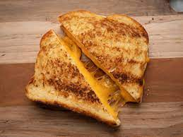

Grilled Cheese Recipe

Here is another basic quick meal to make and one of my favorite things to
eat although I dont eat it often. The steps to make it are below.
- Heat a skillet to medium low while you take 2 slices of cheese and sandwich
them between 2 slice of bread
- Next you want to spread some fat on the bread so it doesnt stick then cook
until lightly brown (3 to 4 minutes)
- Now flip it and repeat till the other side is browned,let it cool then enjoy.
Thats the end for the recipe now you just have to enjoy the food you made
its pretty simple.